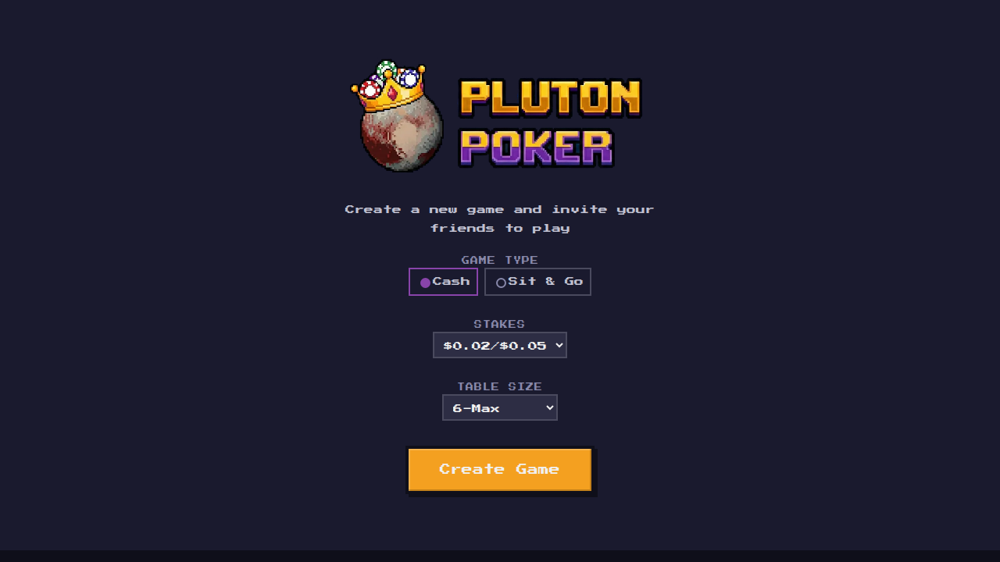
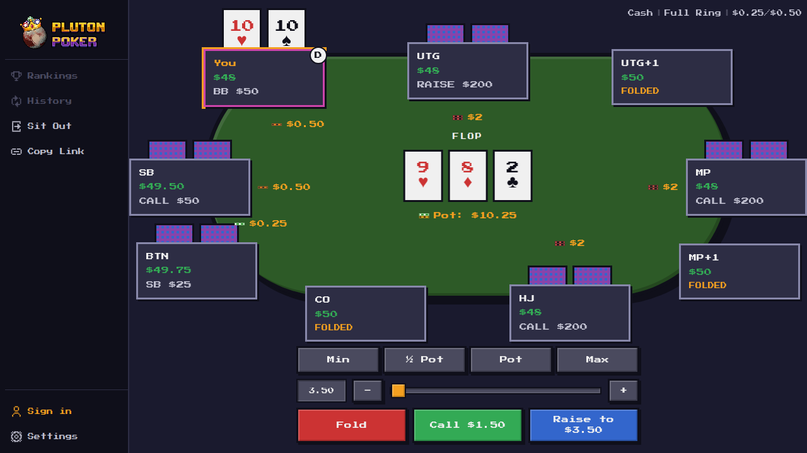
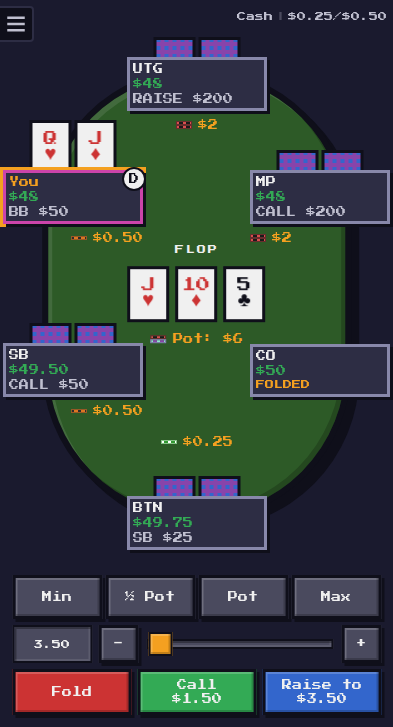
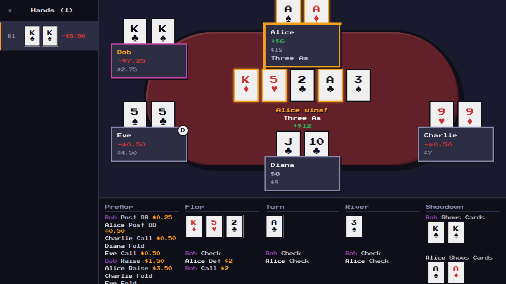
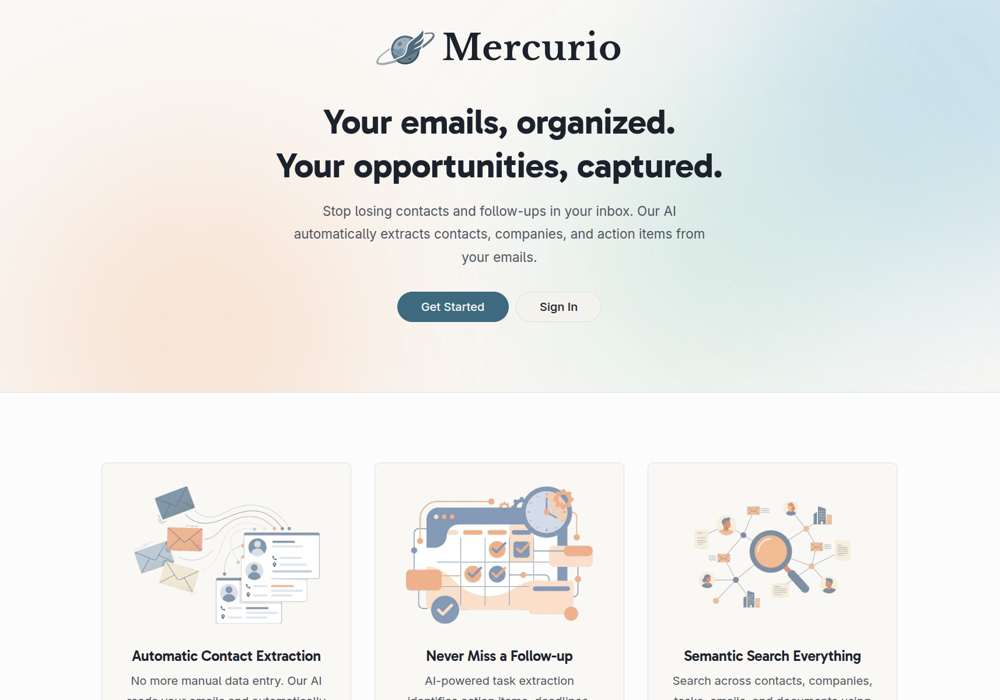
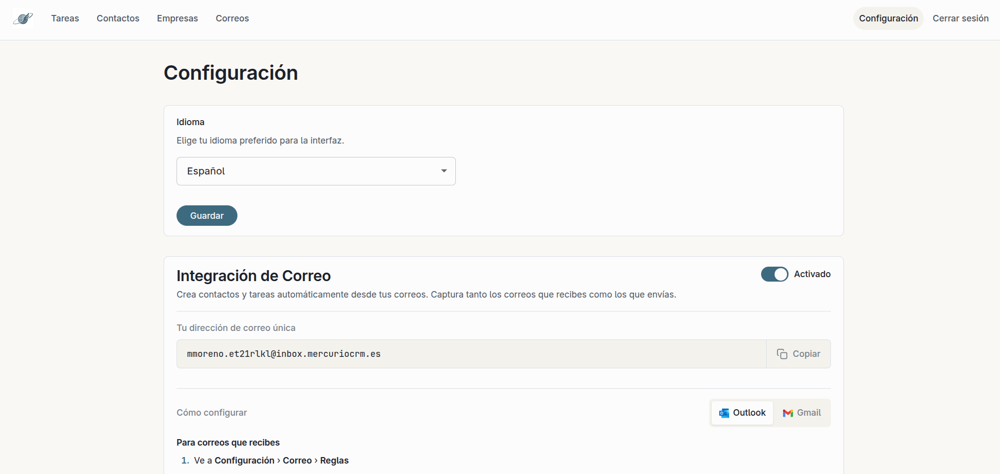
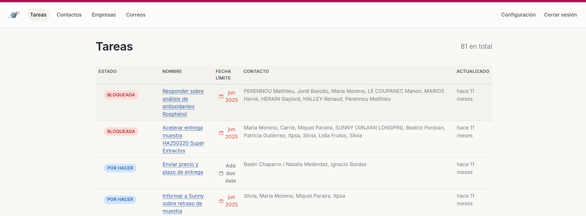

These are products and prototypes I have built outside my day job. I use
side projects to explore ideas end to end: product discovery,
implementation, deployment, maintenance, and the decision of whether an
idea is worth continuing.




I built it to remove the friction of gambling platforms: no real-money
accounts, no VPNs, no identity checks, and no signup required to start a
table.
The hardest part was the game engine. Poker looks simple from the UI,
but the rules create many edge cases: betting rounds, all-ins, side
pots, split pots, showdowns, player disconnects, and table recovery. The
backend owns the game state and the frontend renders each player's view
over WebSockets.
What it shows
- Domain modeling for complex business rules
- Realtime state synchronization
- Server-authoritative application design
- Test coverage for tricky edge cases
- Pragmatic product design focused on removing friction
Lessons learned
-
Complex rules need explicit state transitions, strong tests, and
recovery paths.
- A simple UX often depends on a much stricter backend.
-
Multiplayer products are hard because every user action changes the
state other users see.



I built it to help my wife manage customer relationships at work. It
ingested emails through a Microsoft integration and used an LLM to
extract contacts, companies, and follow-up tasks.
The prototype worked and was hosted, but I stopped the project after
validating the real constraint: the CRM did not have enough business
context. Important data lived in systems I could not access, especially
the ERP. Without those integrations, the AI could only provide partial
value.
What it shows
- AI product prototyping
- Ruby on Rails product development
- Microsoft integration work
- LLM-based information extraction
-
Product judgment: knowing when a working prototype is still not enough
Lessons learned
-
AI products are only as useful as the context and actions they can
access.
- Integration access can be a bigger moat than model quality.
-
A working prototype is not enough if the distribution and data-access
paths are structurally weak.